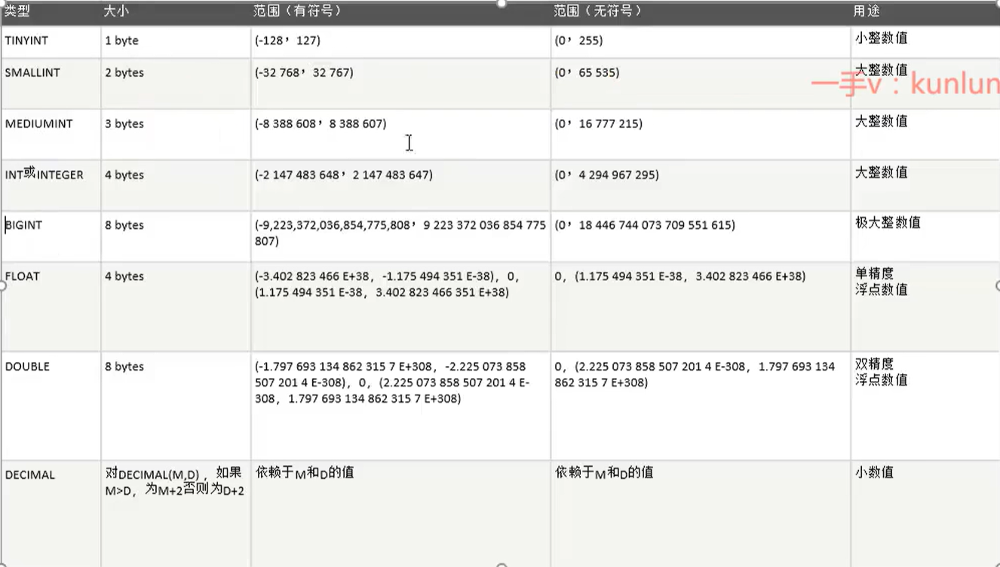
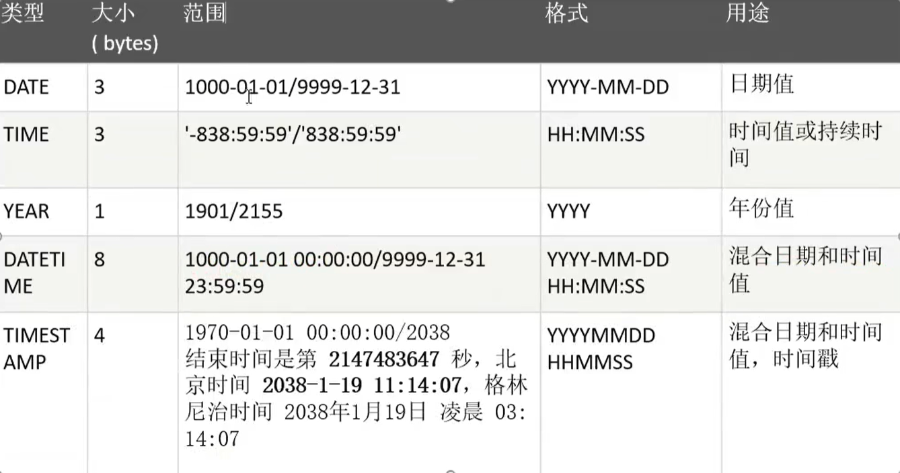
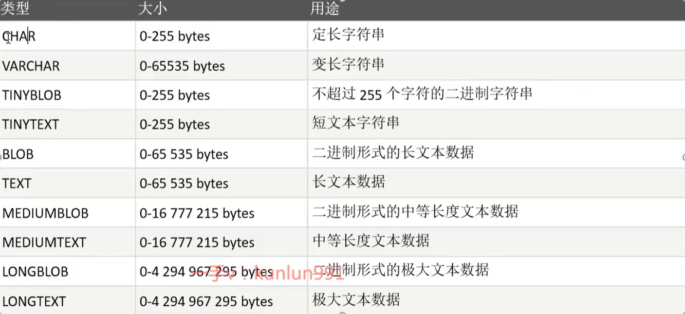

数据库必备基本操作
数据库基本知识
- 数据库概念
- 数据库：按照一定的数据结构（数据的组织形式/数据之间的联系）存放计算机数据的仓库，通过数据库提供的多种方法来管理其中的数据
- 数据库管理系统（DBMS）：操纵和管理数据库的大型软件，用于建立、使用、维护数据库，如MySQL、Oracle、SQL Server
- 数据库分类
- 关系型数据库（SQL） 1. 采用关系模型来组织数据 2. 事务的一致性[可见性的约束，中间状态对其他事务不可见] 3. 关系模型：二维表格模型 关系型数据库：二维表及其之间的联系所组成的数据组织 优点：容易理解、使用方便、易于维护、支持SQL 缺点：读写性能较差、表的结构固定
- 非关系型数据库（NoSQL、Not Only SQL） 1. 采用键值存储数据（key、value） 2. 分布式[工作内容分给很多人干] 3. 严格上不是数据库，而是数据结构化存储方法的集合 优点：海量数据的维护和处理非常轻松 缺点：数据之间没有关系，不能保证数据的完整性、安全性
- 常见数据库
| 关系型数据库（SQL） | 非关系型数据库（NoSQL，Not Only SQL） | |
|---|---|---|
| 大型 | Oracle | Memcached（key-value） |
| 中型 | MySQL、SQLServer | MongoDB（Document-oriented） |
| 小型 | Access | Redis（key-value） |
SQL命令基础
- 数据库
- 连接数据库：mysql -uusername -ppassword;
- 创建数据库：create database 数据库名;
- 删除数据库：drop database 数据库名;
- 选择数据库：use 数据库名;
- 查询系统数据库：show databases;
- 查看数据库本地存放位置：show variables like '%datadir%';
- 数据类型
数值类型：

日期和时间类型：
字符串类型：
- 数据表
- 创建数据表：create table 表名（字段名 字段的数据类型）；
- 添加字段：alter table 表名 add column 字段名 varchar（1）；
- 修改字段类型：alter table 表名 modify column 字段名 varchar（2）；
- 修改字段名称：alter table 表名 change column 字段名1 字段名2 varchar（2）；
- 删除字段：alter table 表名 drop column 字段名；
- 修改表名称：alter table 表名 rename to 字段名；
- 查看数据表：show tables；
- 查看表结构：desc 表名；
- 删除数据表：drop table 表名；
- 数据增删改查
- 增（insert） SQL语法： insert into table_name(field1,field2...) values(value1,value2...); 向User表中插入数据： insert into user values(2,'李四','123456',18); 向User表中指定列中插入数据： insert into user(id,name) values(1,'张三');
- 删（delete from） SQL语法： drop table table_name; 全表数据删除： delete from student; 按条件删除数据 delete from student where id=2;
- 改（update） SQL语法： update table_name set field=new-value1,field2=new-value2 where 不按条件，修改整个字段 update users set uname='张三'; 按条件修改 一个字段 update users set uname='李四' where id=2; 修改多个字段 update users set uname='王五',age=40 where id=1;
- 查（select） SQL语法： select column_name,column_name from 查询所有字段 select * from 表名; 查询指定的字段 select 字段名1,字段名2 from 表名； 查询时指定别名（as可省略）重命名 select 字段名1 as ‘编号1’，字段名1 as ‘编号’ 查询去除重复记录 select distinct 字段名 from 表名；
- 条件查询 select field1，field2，……from table_name1,table_name2... where condition1 and|or condition2... 1. 逻辑条件：and（与）or（或） select * from users where id =1 and uname =‘张三’；（两个条件必须同时满足） select * from users where id =1 or uname =‘张三’；（两个条件满足一个即可） 2. 比较条件：> < >= <= = < >(between and) select * from users where age>18; select * from users where age=18; select * from users where age<>18; select * from users where age>=18; 3. 模糊条件：like 模糊替代符号：%：替代任意个字符； _ ：替代一个字符 select * from users where uname like '张_'; select * from users where uname like ‘李%’; 4. 分页查询： select column_name,column_name from table_name limit select * from users limit 2;[查询前两条] select * from user limit 2,3;[第二条后面的三条，即345] 5. 聚合查询： select max(column_name),min(column_name),avg(column_name),count(column_name) from table_name max():取最大值； select max(age) from users; min():取最小值； select min(age) from users; avg():平均函数； select avg(age) from users; count():统计表的记录数量 select count(*) from user; 6. 分组查询： select column_name,function(column) from table_name where column_name operator value where column_name operator value group by column_name; select age,count(*) from users group by age;[统计年龄及数量] 7. 排序查询： asc：升序。数值从小到大，字母a-z select * from users order by id asc；[对id字段升序排序] desc：降序。数值从大到小，字母z-a select * from users order by id desc；
- 常用的数据库常量
- select @@tmpdir查看临时目录
- select @@datadir数据存放位置
- select @@basedir数据库服务所在位置
- select @@version查看版本号
- select @@hostname查看当前用户名
- 常用数据库函数
- select char（97）；——返回ASCII码对应的字符
- select char（‘a’）；——返回字符对应的ASCII码
- select if（1=1,3,2）；——如果逻辑表达式为真，返回1；假，返回2
- select mid（‘admin’，1,1）；——截取字符串
- select substr（‘admin’，1,1）；——截取字符串
- select length（‘aaaaa’）；——返回字符串长度
- select left（‘abcdefg’，2）——从左往右截取两个字符
- select right（‘abcdefg’，2）——从右往左截取两个字符
- user（）——获取登录用户名
- version（）——获取当前版本号
- database（）——获取当前数据库
- sleep（）——休眠